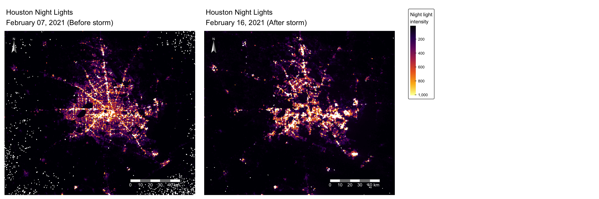
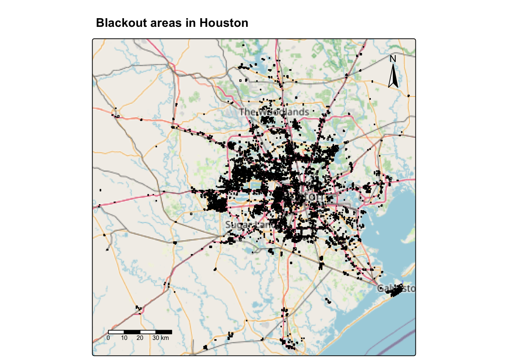
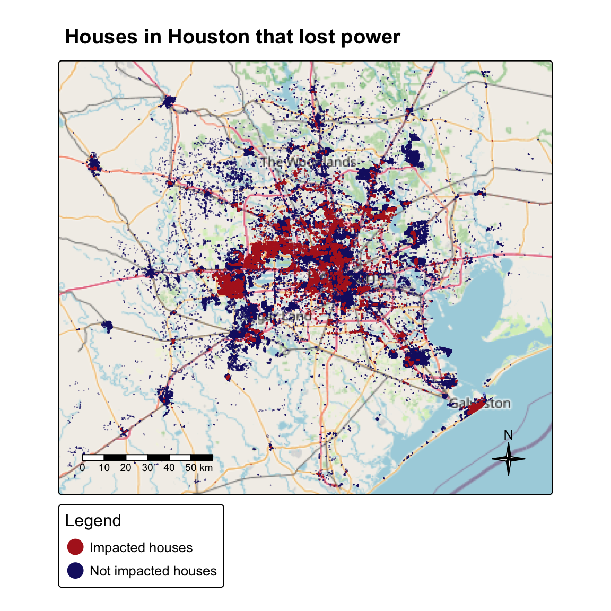
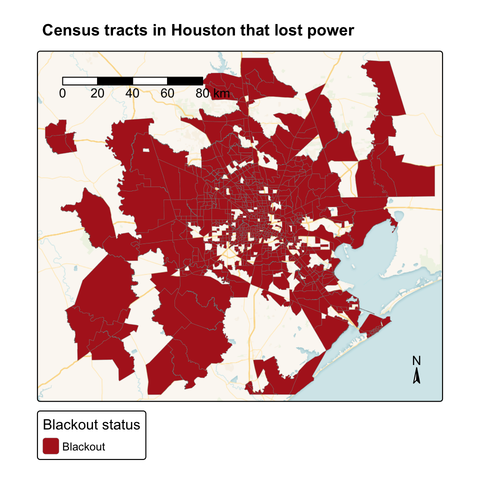
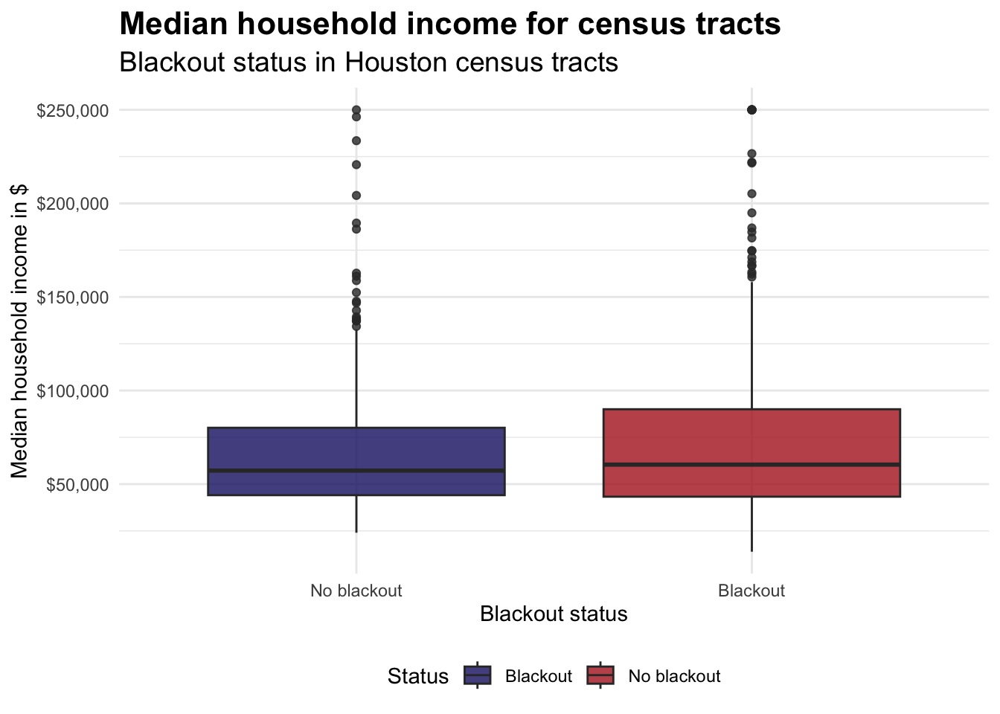

library(tidyverse)
library(sf)
library(tmap)
library(terra)
library(kableExtra)
library(stars)Identifying the impacts of extreme weather
Load required libraries
Read data
# Read night lights data
tile05_07 <- read_stars(here::here('data', 'VNP46A1', 'VNP46A1.A2021038.h08v05.001.2021039064328.tif'))
tile06_07 <- read_stars(here::here('data', 'VNP46A1', 'VNP46A1.A2021038.h08v06.001.2021039064329.tif'))
tile05_16 <- read_stars(here::here('data', 'VNP46A1', 'VNP46A1.A2021047.h08v05.001.2021048091106.tif'))
tile06_16 <- read_stars(here::here('data', 'VNP46A1', 'VNP46A1.A2021047.h08v06.001.2021048091105.tif'))
# Read roads data
highways <- st_read(here::here('data', 'gis_osm_roads_free_1.gpkg'),
query = "SELECT * FROM gis_osm_roads_free_1 WHERE fclass = 'motorway'") %>%
st_transform(crs = 'EPSG:3083')
# Read houses data
houses <- st_read(here::here('data',
'gis_osm_buildings_a_free_1.gpkg'),
query = "SELECT *
FROM gis_osm_buildings_a_free_1
WHERE (type IS NULL AND name IS NULL)
OR type IN ('residential', 'apartments', 'house', 'static_caravan', 'detached')") %>%
st_transform('EPSG:3083')
# Explore the contents of the geodatabase
socioeconomic <- st_layers(here::here('data', 'ACS_2019_5YR_TRACT_48_TEXAS.gdb'))
# Extract the census tract information
census_tract <- st_read(here::here('data', 'ACS_2019_5YR_TRACT_48_TEXAS.gdb'), layer = 'ACS_2019_5YR_TRACT_48_TEXAS') %>%
st_transform('EPSG:3083')
# Extract the income information
income <- st_read(here::here('data', 'ACS_2019_5YR_TRACT_48_TEXAS.gdb'), layer = 'X19_INCOME')Merge raster data and create houston bounding box
# Merge two raster data of February 7
nightlight_07 <- st_mosaic(tile05_07, tile06_07)
# Merge two raster data of February 16
nightlight_16 <- st_mosaic(tile05_16, tile06_16)
# Create Houston bounding box
houston_bbox <- st_bbox(c(xmin = -96.5, xmax = -94.5, ymin = 29, ymax = 30.5),
crs = 'EPSG:4326')
# Crop all raster data to Houston area
nightlight_07_crop <- st_crop(nightlight_07, houston_bbox)
nightlight_07_crop[(nightlight_07_crop > 1000) | (nightlight_07_crop <= 0)] <- NA
nightlight_16_crop <- st_crop(nightlight_16, houston_bbox)
nightlight_16_crop[(nightlight_16_crop > 1000) | (nightlight_16_crop <= 0)] <- NAVisualize before and after night light intensities
# Map for February 7 (before storm)
beforestorm <- tm_shape(nightlight_07_crop) +
tm_raster(col.scale = tm_scale_continuous(values = 'inferno'),
col.legend = tm_legend(title = 'Night light\nintensity',
position = tm_pos_out('right'))) +
tm_title('Houston Night Lights\nFebruary 07, 2021 (Before storm)',
size = 1.3) +
tm_compass(position = c('left', 'top'),
type = 'arrow',
size = 3,
text.size = 0.6,
color.dark = 'grey50',
text.color = 'white') +
tm_scalebar(position = c('right', 'bottom'),
text.size = 0.8,
color.dark = 'grey50',
text.color = 'white') +
tm_layout(bg.color = 'white',
outer.bg.color = 'white',
frame = FALSE,
legend.show = FALSE)
# Map for February 16 (after storm)
afterstorm <- tm_shape(nightlight_16_crop) +
tm_raster(col.scale = tm_scale_continuous(values = 'inferno'),
col.legend = tm_legend(title = 'Night light\nintensity',
position = tm_pos_out('right'))) +
tm_title('Houston Night Lights\nFebruary 16, 2021 (After storm)',
size = 1.3) +
tm_compass(position = c('left', 'top'),
type = 'arrow',
size = 3,
text.size = 0.6,
color.dark = 'grey50',
text.color = 'white') +
tm_scalebar(position = c('right', 'bottom'),
text.size = 0.8,
color.dark = 'grey50',
text.color = 'white') +
tm_layout(frame = FALSE,
legend.show = FALSE)
legend_map <- tm_shape(nightlight_16_crop) +
tm_raster(col.scale = tm_scale_continuous(values = 'inferno'),
col.legend = tm_legend(title = 'Night light\nintensity',
position = tm_pos_out('right'))) +
tm_layout(legend.only = TRUE, legend.outside = TRUE, legend.position = c("right", "center"))
tmap_arrange(beforestorm, afterstorm, legend_map, ncol = 3)
Create blackout mask
# Calculate the difference in light intensity
nightlight_diff <- nightlight_07 - nightlight_16
# Crop and reclassify the raster data
mask <- st_crop(nightlight_diff, houston_bbox)
mask[mask < 200] <- NA
# Vectorize the blackout mask
blackout <- st_as_sf(mask,
as_points = FALSE,
merge = TRUE) %>%
st_make_valid() %>%
st_transform(crs = 'EPSG:3083')# Combine all highway geometries into one
highways_union <- st_union(highways)
# Create 200m buffer around all highways
highways_buffer <- st_buffer(highways_union, dist = 200)
# Find areas that experienced blackouts further than 200m from highways
blackout_far <- st_difference(blackout, highways_buffer)
# Visualize the blackout in Houston
tm_basemap('OpenStreetMap') +
tm_shape(blackout_far) +
tm_polygons(fill = 'ivory', fill_alpha = 0.8, col = 'black') +
tm_title('Blackout areas in Houston', fontface = 'bold', size = 1) +
tm_layout(legend.show = TRUE) +
tm_scalebar(position = c('left', 'bottom')) +
tm_compass(position = c('right', 'top'))
Estimate of the number of homes in Houston that lost power
Approximately 157,970 homes in Houston lost power in February 2021 due to the severe winter storms and resulting major power crisis.
Note: I used st_intersects. st_intersects returns a boolean value indicating whether two geometries share any features or if they have any point in common. TRUE (or 1) if the geometries intersect, FALSE (or 0) if they are completely separate.
# Keep buildings that intersect with blackout areas
houses_blackout <- st_intersects(houses, blackout_far)
# Check if each building is in a blackout area
in_blackout <- lengths(houses_blackout) > 0
# Filter buildings in blackout areas
blackout_houses <- houses[in_blackout, ]
# Number of impacted buildings
n_blackout_houses <- nrow(blackout_houses)
# Convert all buildings to centroids
houses_points <- houses %>%
st_centroid()
# Houses impacted by blackouts
houses_impacted <- blackout_houses %>%
st_centroid()
# Houses not impacted by blackouts
houses_not_impacted <- houses_points %>%
filter(!osm_id %in% blackout_houses$osm_id)Map of the homes in Houston that lost power
# Create the map
tm_basemap('OpenStreetMap') +
tm_shape(houses_not_impacted) +
tm_dots(fill = 'midnightblue', size = 0.02, fill_alpha = 0.8) +
tm_shape(houses_impacted) +
tm_dots(fill = 'firebrick', size = 0.02, fill_alpha = 0.8) +
tm_title('Houses in Houston that lost power',
position = tm_pos_out('center', 'top'),
fontface = 'bold', size = 1.2) +
tm_layout(legend.outside = TRUE,
legend.outside.position = 'right',
legend.title.size = 1,
legend.text.size = 0.8) +
tm_add_legend(labels = c('Impacted houses', 'Not impacted houses'),
fill = c('firebrick', 'midnightblue'),
col = c('firebrick', 'midnightblue'),
alpha = c(0.2, 0.7, 0.5),
title = 'Legend') +
tm_scalebar(position = c('left', 'bottom'),
text.size = 0.6) +
tm_compass(position = c('right', 'bottom'),
type = '4star',
size = 2)
Census tracts in Houston that lost power
# Rename the column in income dataset to match with the census tract
income_renamed <- income %>%
rename("GEOID_Data" = "GEOID")
# Left join the two datasets by the geometry
census_income <- census_tract %>% left_join(income_renamed, by = 'GEOID_Data')# Check CRS of the dataset
if(st_crs(census_income) == st_crs(houston_bbox)){
print("Coordinate reference systems match!")
} else {
warning("Update coordinate reference systems to match!")
}Warning: Update coordinate reference systems to match!# Transform the CRS and crop to houston bounding box
census_income <- st_transform(census_income, crs = 'epsg:4326')
# Crop census income to Houston
census_income_crop <- census_income %>%
st_crop(houston_bbox)
# Transform and clean blackout houses
blackout_houses_transformed <- blackout_houses %>%
st_transform(crs = 'epsg:4326')
# Identify the blackout areas
census_blackout <- st_intersects(census_income_crop, blackout_houses_transformed)
# Create the column
census_blackout_col <- census_income_crop %>%
mutate(blackout = lengths(census_blackout) > 0)
# Select only the values that are true for plotting
census_blackout_col_filtered <- census_blackout_col[census_blackout_col$blackout, ]Map of the census tracts in Houston that lost power
# Map the census tracts that lost power
tm_basemap('CartoDB.VoyagerNoLabels') +
tm_shape(census_blackout_col_filtered) +
tm_polygons(fill = 'blackout',
fill.scale = tm_scale_categorical(
values = c('TRUE' = 'firebrick'),
labels = c('TRUE' = 'Blackout')),
fill.legend = tm_legend(title = 'Blackout status'),
col = 'grey50',
lwd = 0.2) +
tm_title('Census tracts in Houston that lost power',
position = tm_pos_out('center', 'top'),
fontface = 'bold',
size = 1) +
tm_layout(legend.outside = TRUE,
legend.outside.position = 'right',
legend.bg.color = 'white',
legend.bg.alpha = 0.8) +
tm_compass(position = c('right', 'bottom'),
type = 'arrow',
size = 1) +
tm_scalebar(position = c('left', 'top'),
text.size = 0.8)
Plot comparing the distributions of median household income
ggplot(census_blackout_col %>% filter(!is.na(B19013e1)), # Remove NA values
aes( x = blackout, y = B19013e1, fill = blackout)) +
geom_boxplot(alpha = 0.8) +
scale_x_discrete(labels = c('TRUE' = 'Blackout',
'FALSE' = 'No blackout')) +
scale_fill_manual(values = c('TRUE' = 'firebrick',
'FALSE' = 'midnightblue'),
labels = c('Blackout', 'No blackout')) +
labs(title = 'Median household income for census tracts',
subtitle = 'Blackout status in Houston census tracts',
x = 'Blackout status',
y = 'Median household income in $',
fill = 'Status') +
scale_y_continuous(labels = scales::dollar_format()) +
theme_minimal() +
theme(plot.title = element_text(face = 'bold', size = 16),
plot.subtitle = element_text(size = 14),
legend.position = 'bottom')

Brief reflection
A brief reflection (approx. 100 words) summarizing your results and discussing any limitations to this study
Answer This analysis used satellite data to compare median household incomes between areas affected and unaffected by the blackout. Interestingly, higher-income census tracts were more affected, as their median income was slightly higher than that of non-blackout areas. This result may reflect several limitations such as wealthier neighborhoods often have more outdoor lighting, census tract–level data may overlook neighborhood differences, and blackout areas could be misclassified due to highway lighting or cloud cover. The analysis may also have assumed all structures were residential, while vegetation near power lines and the 200-meter buffer used could further limit accuracy of true lighting.